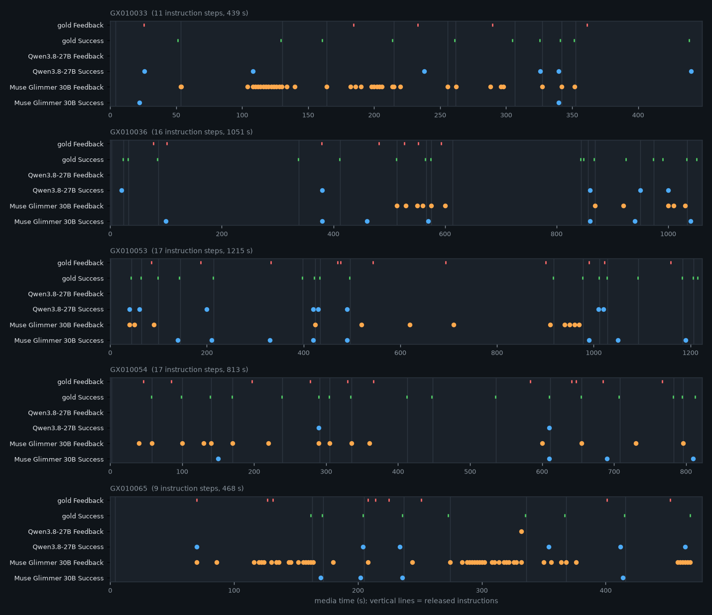

Two ordinary offline VLMs are turned into online assistants with a causal 8-frame sliding visual window plus a self-generated recurrent text memory, then replayed in media time on five randomly sampled items from each of five streaming video benchmarks (Ego-MC-Bench, Wearable AI, StreamingBench, OVO-Bench, ProactiveVideoQA). All 50 model–item trajectories ran end to end (5,578 calls, 8 unparseable outputs); official or adapted scorers ran where no LLM judge is required. Five items per benchmark establish that the pipeline works; they are not a model ranking.
The goal was infrastructural: verify that dataset acquisition, causal video decoding, sliding-window inference with
recurrent memory, benchmark-format export and the available scorers work together for two 27–30B vision-language
models, and report the first numbers on a fixed, reproducible sample. Everything below was produced by one code
base (streaming_smoke) with pinned model revisions, pinned dataset revisions and a frozen manifest.
Can an offline VLM act as a causal online assistant when it only ever sees the eight most recent frames and a short memory it wrote itself — and does the whole chain (data → decoding → inference → export → scoring) hold up across five benchmarks with different interaction protocols?
to=self reasoning stripped, only the terminated to=user channel is parsed; Qwen enable_thinking=Falsevideo_intervals and answers at each question turn with its own prior answers as history; EgoProactive makes the query public at the first interval and scores one $silent$ / $interrupt$ decision per interval end.realtime for backward/real-time tasks; CRR question public at ask_time with Yes/No probes; SSR/REC queries revealed at probe time; probes dispatched in timestamp order with original indices preserved.model_response_list.Each call receives: the current media time, the standing task text, the public dialogue so far (new lines marked),
the frame window with absolute timestamps, the previous memory, and one instruction for this call. It must return one
JSON object {"decision": answer|speak|silent, "text": ..., "memory": {...}}. A valid response updates the
memory; an invalid one keeps the previous memory and is logged as a failed call. Every call is checkpointed, so runs
resume exactly without duplicating or skipping decision points.
Quarantined before sampling (structural validation only): Ego-MC 1/40 (video starts without an instruction),
Wearable 44/2100 (22 dialog turns going backward in time, 21 question/turn mismatches, 1 bad interval),
StreamingBench 1/2800 (the sample_7 SQA episode whose last turn precedes the previous one).
You are an online video assistant watching a live stream. You only ever see the most recent frames of the stream (each labeled with its absolute time in seconds) plus a short written memory that you yourself produced on the previous call. Nothing else about earlier footage survives, so your memory must carry everything you will need later.
Rules:
- Describe only what the frames support. Do not invent events, speech, or future actions.
- Earlier frames are gone; rely on your memory for anything before the current window.
- Keep the memory compact and factual. Hard limits: observed_facts at most 8 entries, completed_steps at most 6, pending_commitments at most 3, uncertainties at most 3; every entry at most 15 words and prefixed with its time (e.g. "12s: ..."); current_state at most 40 words. Merge or drop older entries instead of exceeding these limits. The memory is for YOUR later use, not an answer.
- Reply with ONE JSON object and nothing else, in exactly this shape:
{"decision": "answer" | "speak" | "silent", "text": "<your answer or utterance, or empty string>", "memory": {"observed_facts": [...], "completed_steps": [...], "current_state": "...", "pending_commitments": [...], "uncertainties": [...]}}
- decision must be "answer" when a question is asked of you now, "speak" when you choose to say something proactively, and "silent" otherwise (then text is "").
Current stream time: 128.0s.
Standing task / request:
- Current recipe step (instruction 4): Slice the tomatoes.
Public dialogue so far (your own earlier utterances are marked 'you'):
[120.0s] assistant (instruction): Slice the tomatoes.
[124.0s] user (NEW): Okay.
Most recent frames (8), oldest first:
[frame at 121.0s] <image> … [frame at 128.0s] <image>
Your previous memory:
{"observed_facts": [...], "completed_steps": [...], "current_state": "...", "pending_commitments": [...], "uncertainties": [...]}
Released now: ← only at a decision point: the MCQ, the step text, the probe question …
{"question": "...", "options": ["A. ...", "B. ...", "C. ...", "D. ..."]}
Instruction for this call: <one of the per-call instructions below>
Return only the JSON object.
refresh (no decision): No response is required at this moment: set decision to "silent" and text to "" and update your memory. answer_mcq: A multiple-choice question has just been released (see "Released now"). Answer it now: set decision to "answer" and put ONLY the letter of your chosen option (A, B, C or D) in text. answer_free (Wearable EgoConv): The user has just asked you the question shown under "Released now". Answer it now in one to three sentences based on what you have seen: set decision to "answer". probe_crr (OVO): Decide whether the visual content you have seen so far, especially the latest frames, provides enough information to answer the standing question. Set decision to "answer" and text to exactly "Yes" or "No". interval_end (Wearable EgoProactive): A video chunk has just ended. Decide whether to interrupt the user now with the next useful step-by-step guidance or correction for their standing request: set decision to "speak" with the utterance, or "silent" if nothing should be said yet. Do not repeat guidance you already gave. monitor (Ego-MC): You are guiding the user through the CURRENT recipe step (the standing instruction). If the latest frames show the user making a mistake relative to that step, set decision to "speak" and text to "Feedback: <short correction>". If the step now appears completed, set decision to "speak" and text to "Success: <short confirmation>". Otherwise set decision to "silent". Do not repeat feedback you already gave. proactive poll (StreamingBench): The standing request asks you to output a specific phrase as soon as a condition becomes true. If the condition is true in the latest frames, set decision to "speak" and put exactly the requested output in text; otherwise set decision to "silent". proactive poll (ProactiveVideoQA): You are a proactive assistant answering the user's standing question as the video unfolds. If the latest frames show something new that answers or advances the question, set decision to "speak" with a concise reply; otherwise "silent". Never repeat an earlier reply.
to=self<|message|>Current stream time 22.0s. Instruction: slice four half-inch baguette pieces. Frames show four slices cut … Set decision speak, Success.<|eom|><|start|>assistant to=user<|message|>{"decision": "speak", "text": "Success: Four half-inch baguette slices are cut and ready.", "memory": {"observed_facts": ["0s: baguette in paper bag on left counter", "12s: knife cutting first slice", "22s: four slices on board"], "completed_steps": ["22s: four half-inch baguette slices cut"], "current_state": "Four slices ready on the board", "pending_commitments": [], "uncertainties": []}}<|eot|>
Prompt v1 had no explicit memory limits and produced 300–800-token memories (26 s per Qwen call). v2 adds hard per-field limits; the deterministic 512-token bound stays as a backstop and pruning is logged.
Five items per benchmark. Every denominator is the number actually exported. Absent subtasks are N/A, never zero. Judge-based metrics are blocked (no judge credentials).
| Benchmark | Metric (evaluator) | Qwen3.8-27B | Muse Glimmer 30B | Status |
|---|---|---|---|---|
| Ego-MC-Bench | Instruction-completion acc. (n = 36 no-mistake steps) | 0.28 | 0.14 | adapted_QICD_evaluator_for_EgoMC |
| Mistake precision / recall / F1 | 0.00 / 0.00 / 0.00 (tp 0, fp 1, fn 43) | 0.16 / 0.40 / 0.23 (tp 17, fp 90, fn 26) | adapted; |Δt| < 15 s | |
| Matched feedback ROUGE-L / BERTScore-F1 | N/A (0 matched) | 0.19 / 0.89 (35 matched) | adapted | |
| Wearable AI | EgoLongQA MCQ accuracy | 0/1 | 1/1 | official (starter kit) |
| EgoConv BLEU-4 (11 turns) | 0.065 | 0.040 | official BLEU; LLM-judge blocked | |
| EgoProactive macro-F1 / G-mean F1 (48 chunks) | 0.44 / 0.40 (tp 20, fp 18, tn 4, fn 6) | 0.37 / 0.35 (tp 14, fp 17, tn 5, fn 12) | official (starter kit) | |
| StreamingBench | Real-time MCQ accuracy (5 questions) | 4/5 | 4/5 | official formula; SQA / proactive N/A (not sampled) |
| OVO-Bench | HLD · STU · ACR · FPD (1 probe each) | 1 · 1 · 0 · 0 | 1 · 0 · 0 · 0 | official scorer; REC / SSR N/A |
| CRR (5 probes, one record) | 5/5 | 5/5 | official scorer | |
| ProactiveVideoQA | PAUC | — | — | evaluation_blocked (gpt-4.1 judge); pred.jsonl exported |
| Model | Benchmark | Items complete | Calls made / scheduled | Unparseable | Latency med / p95 (s) | Peak alloc (GiB) |
|---|---|---|---|---|---|---|
| Qwen3.8-27B | Ego-MC | 5/5 | 734 / 835* | 0 | 7.8 / 10.5 | 52.0 |
| Wearable AI | 5/5 | 324 / 324 | 0 | 12.2 / 17.1 | 52.4 | |
| StreamingBench | 5/5 | 760 / 760 | 0 | 11.2 / 14.7 | 52.0 | |
| OVO-Bench | 5/5 | 412 / 412 | 0 | 13.5 / 15.1 | 52.2 | |
| ProactiveVideoQA | 5/5 | 459 / 459 | 5 | 11.8 / 16.9 | 52.6 | |
| Muse Glimmer 30B | Ego-MC | 5/5 | 767 / 835* | 2 | 13.2 / 21.0 | 56.6 |
| Wearable AI | 5/5 | 324 / 324 | 0 | 16.1 / 25.0 | 56.9 | |
| StreamingBench | 5/5 | 760 / 760 | 1 | 16.7 / 24.0 | 56.4 | |
| OVO-Bench | 5/5 | 412 / 412 | 0 | 16.0 / 21.7 | 56.6 | |
| ProactiveVideoQA | 5/5 | 459 / 459 | 0 | 16.4 / 24.5 | 57.3 |
* Ego-MC monitoring polls are skipped by protocol after a predicted Success until the next instruction. Latency = prefill + decode per call under media-time replay (not charged to the stream). All 8 unparseable outputs were the same formatting slip: an extra ] closing a memory list.

The exact 8-frame windows the models saw at two StreamingBench question times (1 fps, oldest first). Source clips are not redistributed; these strips are the resized observations.
]) and silence.Question released at 397 s; probes at 397, 412 (not yet answerable) and 430, 438, 458 s (answerable). Both models said No, No, Yes, Yes, Yes — the memory carried the question across 60 s of 10-s refreshes.
sample_424 “What text is displayed on the screen right now?” and sample_306 “primary color of the subway train” were answered correctly by both models from the current window alone.
5,570 of 5,578 calls returned the required JSON; memory pruning was never needed after prompt v2 (no call exceeded the 512-token bound).
Qwen: 1 Feedback in 5 videos (recall 0). Muse: 90 false positives, mostly repeated every poll. The 2-s/10-s monitoring cadence with an 8-frame window gives neither model a stable notion of “already said”.
Both models answered C (purple, blue) to the racecar order question whose gold is A (red, blue); the sequence had to be reconstructed from memory across several minutes.
8 outputs (5 Qwen, 3 Muse) closed a memory list with an extra ]; they are counted as failed calls, the previous memory was kept, and the trajectory is flagged.
Every model–benchmark pipeline ran end to end and produced exportable predictions; judge-free scores exist for four benchmarks and PAUC-ready exports for the fifth. On this sample the sliding-window + memory wrapper turns both models into functioning but weak online assistants: competent at window-local questions, unreliable at timing proactive interventions, and prone to either silence (Qwen) or repetition (Muse). The numbers are smoke-test evidence, not a comparison of the two models.
experiments/glimmer_qwen_streaming_baseline/streaming_smoke/ in the interactive_model project (config hash a7320faf5ae01237, prompt v2)python -m streaming_smoke inventory --config configs/smoke.yaml python -m streaming_smoke sample --config configs/smoke.yaml # seed 42, 5 per benchmark python -m streaming_smoke acquire --config configs/smoke.yaml # selected media only python -m streaming_smoke validate --config configs/smoke.yaml python -m tests.test_causal # 23 causal / isolation / resume checks sbatch submit_jobs/streaming_smoke_run_qwen27b.slurm # 3-shard job array, --resume sbatch submit_jobs/streaming_smoke_run_muse30b.slurm # 5-shard job array, --resume python -m streaming_smoke score --config configs/smoke.yaml python -m streaming_smoke report --config configs/smoke.yaml